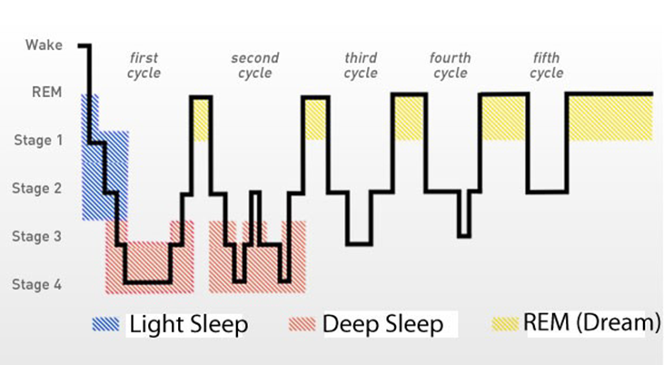

- 00 篇首语 认识汤峥嵘.md.html
- 01 看似理性的程序员为什么可能是最不讲理的？.md.html
- 02 个人性格影响“企业性格”，企业文化离不开人.md.html
- 03 闲话家常（一）：半工半读的留学生活.md.html
- 04 闲话家常（二）：匹兹堡 6 年与硅谷 4 年工作经历.md.html
- 05 从排斥到拥护，我眼中的阿里文化.md.html
- 06 怎样才能遇到自己的“贵人”？.md.html
- 07 选行业秘诀：技术是否能发挥重要作用？.md.html
- 08 途牛野蛮生长，也促使CTO“野蛮生长”.md.html
- 09 闲话家常（三）：纽约打工故事续集.md.html
- 10 管理的本质：如何把硬性政策柔性执行？.md.html
- 11 为什么建议技术团队的组织架构按系统划分？.md.html
- 12 技术、产品、业务三方关系？谁水平高听谁的.md.html
- 13 CTO 直接下属有 60 个总监，怎么管理？.md.html
- 14 无边界访谈：创业思考与高手视角.md.html
- 结束语 给技术人的一封信.md.html
- 捐赠
结束语 给技术人的一封信
你好，我是汤峥嵘。最后一期分享我来做个结尾。
首先，我非常感谢所有购买这个内容的朋友，也感谢极客时间的工作组，特别是编辑利莹。我是生平第一次录制音频节目。虽然有些内容反复录制了很多遍，但还是有挺多不太满意的地方。但是你的购买和留言区的留言，给了我很大鼓励。
虽然这个内容被称为课程，但其实是一些对话，所以我觉得它的标题更准确些。既然是对话，那么内容可能就不那么严谨，而且涉及的内容也比较泛，可能会让你感觉有点跳跃。幸亏有编辑支持做了大量的整理工作，让我的经验分享更成体系。不过我希望能给你呈现出一些你之前可能不太熟悉的内容。无论是我之前在海外读书和工作的经历，还是有关性格、情绪等方面的知识，我都希望能给你一些技术以外的东西。如果你确实能有一点新鲜的感觉，那我觉得目的就达到了。
大家在留言区的留言，我都看过了。从目前留言的比例看，大部分人对于性格分析很感兴趣，而且很多人把自己的性格测试结果发在了留言区。这说明很多人对自己的性格很感兴趣。但我这里一定要强调一下，不要给自己或他人贴标签，更不能因此就把自己给框住了，说这个工作不适合，那个工作更适合之类。
我认为从群体的角度，性格和工作之间的相关性肯定是存在的。但从个体角度看，其实不确定性非常大。所以我认为 MBTI 这类的性格测试工具，它的最大价值是让我们可以有个窗口去看外面的世界，让我们了解这个世界是缤纷多彩的。让我们多一个维度去观察自己，观察同事，观察家人。让我们多一个方法去理解他人。如果你的工作需要你去扮演一个和你性格不同的角色，那就大胆地去扮演。让自己的人生更丰富多彩不是很好吗？只是记得，经常换回到自己的本色，经常回家充充电，该休息就休息一下。
另外，我讲的有关生物情绪的底层逻辑，比如理性脑和非理性脑的理论，这些都是众多剖析情绪本质理论中的一种，也是我目前知道的比较详细的理论，所以分享给你。但我觉得科学就是要保持开放的心态，做好随时被更合理的理论推翻的准备。所以我也鼓励你多去看看一些比较新的研究，让自己永远保持着一颗好奇的心。这方面我比较喜欢听吴军（硅谷投资人）、华大基因的尹烨（著有《生命密码》）、媒体人梁冬，还有罗胖和得到上的一些内容，也推荐给你。
我现在创业做的项目是基于大数据人工智能的健康管理。对健康知识的积累也是我在创业过程中不断完成的，很多内容我之前是完全缺乏认知的。而在我更了解人的生理、健康密码之后，我才知道“健康”两个字的重量，因此很想跟你分享一些健康相关的知识，希望你也能更关注自己的身体，重视健康。
首先是心脏健康。很多年轻人认为自己心血管很健康，不会有心脏问题，像猝死这样的事和自己没半毛钱关系。但实际上，90%的猝死是心律失常导致的。而心律失常，有些是心脏和血管疾病引起的，还有些是因为焦虑、愤怒等情绪引起的。现代人压力越来越大，后者导致心律失常的比例也越来越高。建议你去看一看医学博士杨进刚的一段演讲，他说“愤怒可以使心脏病风险在 2 小时内上升 750%”。所以如果你感觉心脏附近不舒服，一定要重视。
一种方式是去医院检查，背一下 24 小时 Holter（动态心电图监测），等于给你做一个 24 小时的心电图。当然背 Holter 不是很舒服，而且检查窗口也只有 24 小时，时间不够长。我们希望能更长时间监测心脏（心脏相关疾病的检出率，时间越长越有保障），也就是我现在创业在做的事，把监测仪器做进衣服，可以长期穿戴，而且很舒服。我们已经发现，有些人一喝咖啡或者茶，甚至奶茶，就会发生心律失常。如果每天只有一两百次心律失常，那还好。但如果到了 500 次以上甚至 1000 次，其实就需要注意了，这已经是亚健康状态了，而医院一般对 1000 次以下的心律失常都不认为是疾病。所以我认为定期检测一下，可以非常有效地减少猝死的风险。
其次是因为打鼾而引起的呼吸暂停。呼吸暂停会导致睡眠期间血氧饱和度不足，大脑缺氧，严重的甚至会窒息。亚洲人特别是偏胖的人群患呼吸暂停的比例比较高。呼吸暂停分为 3 个等级，轻度、中度和重度。一般到了中度或重度，可能就需要做手术或者使用呼吸机了。但是很多人缺乏这个常识，甚至有人认为打呼声音响是睡得香。我们看到了很多人面临这方面的健康难题，也确信这是科技能发挥作用的地方。因此如果有人发现自己打鼾严重的，我非常建议去医院做一次睡眠舱的检查。睡眠舱检测虽然很专业，但体验很差，头上、脸上、身上要插满管子（一定程度也会影响你的睡眠）。我们希望能做出一个不用插满管子也能达到医疗级测量的产品，于是智能睡衣产品就出现了。如果有人关注大数据健康领域，欢迎体验交流。
第三个问题是缺乏深睡眠。睡眠通常分成三个深度和阶段。最深的叫深睡眠期，这时候脑电波很慢，也叫慢波睡眠，这是最放松的阶段；其次是浅睡眠期；最浅的阶段是快速眼动期，也叫 REM（Rapid Eye Movement）期。在这个阶段，脑电波比较活跃，眼球会快速转动。做梦往往在这个阶段。一般来说，人的睡眠从浅睡眠阶段开始，逐渐进入深睡眠阶段，然后再回到浅睡眠，最后到快速眼动阶段。这样就完成了一个睡眠周期。通常一个周期平均 90 分钟，一个晚上有 5 个这样的周期。开始的几个周期，深睡眠会比较多些。越往后，深睡眠就越少。- 
现在科学家发现，缺乏深睡眠会导致患阿尔兹海默症（也就是老年痴呆症）的概率大幅提升。因为科学家发现阿尔兹海默症患者的大脑中，有一种叫β淀粉样蛋白的沉淀比较多。而深睡眠期间，会发生一个脑脊液清洗的过程，也被戏称为“洗脑”。在这个过程中，β淀粉样蛋白会被清洗掉。换句话说，缺乏深睡眠，就不容易清洗β淀粉样蛋白，也就提升了阿尔兹海默症患病的概率。而目前呢，阿尔兹海默还没有好的治疗方案。而且一旦阿尔兹海默发病进程启动了，就不太容易逆转了。所以大家真的要关注自己的深睡眠。
我认为缺乏深睡眠这个问题，从事技术和互联网的人群会比较多一些。因为大家都是偏脑力劳动者，缺乏运动。白天动脑过度，晚上就容易做梦。我曾经就非常缺乏深睡眠，一开始用手表手环测，没有发现这个问题，数据都是 1-2 小时深睡眠。但用我们的产品测，发现一晚上的深睡眠经常不到 10 分钟。后来我专门去医院做了专业检测，确认就是这么少，那我就开始紧张了。但是我通过科学的训练，现在已经把自己的深睡眠调整到了 1 个小时，甚至接近 2 个小时。
我这里分享一点经验。一是要多锻炼，也可以练习站桩冥想等活动。马云的太极老师阎素杰大师曾经给我们公司的人开过一个 21 天的站桩初级课。很多人都反映练了以后，睡眠有改进。我自己的数据也特别好，连续好几天达到过 1 小时 40 分钟，20%左右的深睡眠。这几乎是从来没有过的。另外，室温很重要。美国睡眠协会建议的最佳温度是 15-18 度。现在我夏天的时候就开足了冷气，然后盖大棉被睡觉，效果确实好。也可以在睡前 30 分钟泡个脚或洗个热水澡，让体温先上升，等睡觉的时候，体温迅速下降，也可以达到同样的效果。
再有，就是要养成有规律的睡眠。倒不一定是要早睡。有人习惯早睡，有人习惯晚睡，每个人都有自己的生物节律，或者生物钟。你要试试找到自己的节律。习惯晚睡的人，早睡了反而睡不着。因为身体的生物钟一直在抗拒，因为还没到睡觉的时候。现在很多人出现的问题是等到了该睡的点，反而没有了睡意。有科学家提出一个“黄金 90 分钟”的理论。就是一定要把 5 个睡眠周期的第一个睡眠周期睡好，后面的自然就好。而且这5个睡眠周期的规律是，越到后面，睡眠深度越浅。因此如果一定要牺牲睡眠时间，可以牺牲一点后面的，但一定要保证第一个睡眠周期的质量。
最后一个健康问题是心理或情绪问题。这其实是现代人普遍的问题。大家可以通过心理量表进行测试（我们的智能衣也提供此类功能）。我在前面讲过多次，人在被情绪影响的时候，很容易做出不理性的判断或选择。所以了解一下自己的心理状态，对于我们回归理性还是有帮助的。当然如果发现自己有较强的焦虑或抑郁情绪，我强烈建议还是要去医院或者心理诊所看看。其实当我们接受了自己心理上有问题的时候，我们的问题已经好了一大半。很多人会害怕自己的心理问题被人发现，导致心理负担更重，这种情况更容易加重病情。因此你自己一定要了解自己的心理状态。
好了，一口气把这多么健康的知识分享给你，可能需要一点时间消化。以后有机会，我再给你分享更多的健康知识。那么这个专栏今天就在这里结束吧。借着健康这个话题，我也祝所有人身心健康，工作顺利，家庭美满，生活幸福！再见！
最后，希望你能花两三分钟填写一下这份问卷，非常期待能听到你对这门课的反馈。
© 2019 - 2023 Liangliang Lee. Powered by gin and hexo-theme-book.